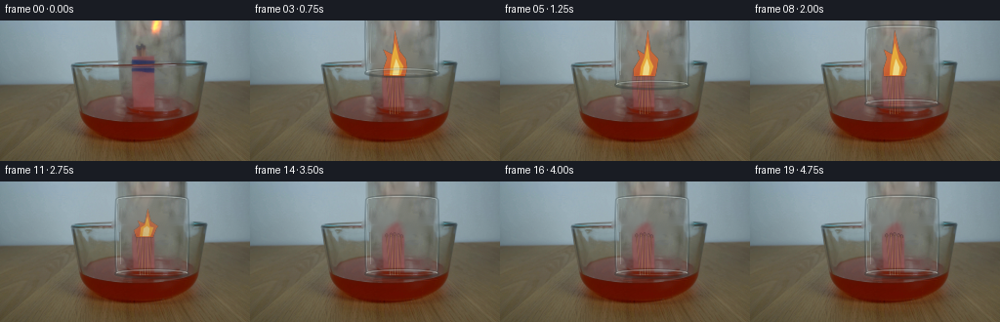
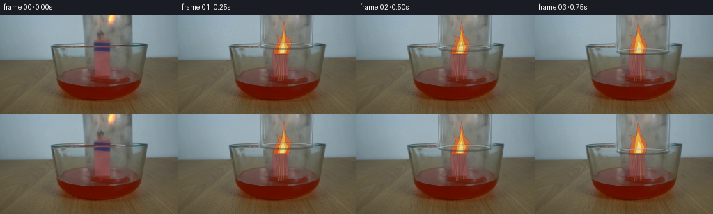

CODING AGENTS AS PIXEL WORLD MODELS
traex/GPT-5.6-Sol · 0164
点击播放 · 原生 RGB 像素
逐轮保存的候选
回放视频、检查图与代码变化。
每份候选均可单独播放。实际图片检查记录在下方工具轨迹中。
候选 01播放与检查图
点击播放 · 原生 RGB 像素

展开代码变化
--- 上一保存版本
+++ 本次保存版本
@@ -0,0 +1,259 @@
+from pathlib import Path
+import math
+import cv2
+import numpy as np
+from PIL import Image
+import artifact_io
+
+CASE_DIR = Path(__file__).resolve().parent
+W, H = 256, 144
+N = 20
+
+
+def alpha_over(dst, src, alpha):
+ """Composite RGB src with scalar or image alpha in [0,1]."""
+ a = np.asarray(alpha, np.float32)
+ if a.ndim == 2:
+ a = a[..., None]
+ return np.clip(dst.astype(np.float32) * (1.0-a) + src.astype(np.float32) * a, 0, 255).astype(np.uint8)
+
+
+def inpaint_soft(image, mask, radius=4):
+ m = np.asarray(mask, np.uint8)
+ return cv2.inpaint(image, m, radius, cv2.INPAINT_TELEA)
+
+
+def smoothstep(x):
+ x = max(0.0, min(1.0, x))
+ return x*x*(3.0-2.0*x)
+
+
+def aa_layer(scale=4):
+ return np.zeros((H*scale, W*scale, 4), np.uint8)
+
+
+def poly(layer, pts, color, scale=4):
+ p = np.round(np.asarray(pts, np.float32)*scale).astype(np.int32)
+ cv2.fillPoly(layer, [p], color, lineType=cv2.LINE_AA)
+
+
+def line(layer, p1, p2, color, width=1.0, scale=4):
+ cv2.line(layer, tuple(np.round(np.asarray(p1)*scale).astype(int)),
+ tuple(np.round(np.asarray(p2)*scale).astype(int)), color,
+ max(1, round(width*scale)), cv2.LINE_AA)
+
+
+def ellipse(layer, center, axes, color, width=1.0, start=0, end=360, scale=4):
+ cv2.ellipse(layer, tuple(np.round(np.asarray(center)*scale).astype(int)),
+ tuple(np.round(np.asarray(axes)*scale).astype(int)), 0,
+ start, end, color, max(1, round(width*scale)), cv2.LINE_AA)
+
+
+def composite_rgba(frame, layer, scale=4):
+ small = cv2.resize(layer, (W,H), interpolation=cv2.INTER_AREA)
+ return alpha_over(frame, small[:,:,:3], small[:,:,3].astype(np.float32)/255.0)
+
+
+def make_clean_bases(first):
+ # Remove only the old glass contours. The jar is transparent, so the wall,
+ # flame and bowl remain valid underneath it.
+ jm = np.zeros((H,W), np.uint8)
+ cv2.fillPoly(jm, [np.array([(115,0),(123,0),(124,37),(128,45),(124,49),(118,47),(116,37)],np.int32)], 255)
+ cv2.fillPoly(jm, [np.array([(187,0),(193,0),(192,39),(196,45),(191,49),(185,47),(188,37)],np.int32)], 255)
+ # The doubled oval/open mouth at y=44.
+ cv2.ellipse(jm,(156,44),(38,5),0,0,360,255,3,cv2.LINE_AA)
+ cv2.line(jm,(121,41),(190,41),255,2,cv2.LINE_AA)
+ jm = cv2.dilate(jm, np.ones((3,3),np.uint8), iterations=1)
+ clean = inpaint_soft(first, jm, 4)
+
+ # A fire-free plate used as the flame contracts. Mask follows the actual
+ # tall flame in the supplied frame and stops above the match heads.
+ fm = np.zeros((H,W), np.uint8)
+ fire_poly = np.array([(150,0),(169,0),(168,14),(163,21),(162,32),
+ (169,40),(166,48),(159,55),(134,55),(131,45),
+ (136,36),(138,25),(145,16)], np.int32)
+ cv2.fillPoly(fm,[fire_poly],255)
+ fm = cv2.GaussianBlur(fm,(9,9),0)
+ no_fire = inpaint_soft(clean, (fm>35).astype(np.uint8)*255, 6)
+ return clean, no_fire, fm.astype(np.float32)/255.0
+
+
+def draw_matches(frame, f):
+ # The existing source has the bundle; restrained fine lines make the
+ # individual wooden matchsticks legible without repainting the photograph.
+ layer = aa_layer()
+ sticks = [((143.5,96),(139.7,55.2)), ((146.0,96),(144.2,54.5)),
+ ((148.2,96),(148.0,54.0)), ((151.0,96),(152.1,55.0)),
+ ((153.0,95),(155.2,56.2))]
+ cols = [(151,104,61,120),(174,124,68,110),(155,105,58,120),
+ (178,125,70,105),(147,96,54,110)]
+ for (p1,p2),c in zip(sticks,cols):
+ line(layer,p1,p2,c,0.75)
+ # black/brown spent heads become clearer as the flame dies
+ head_alpha = int(65 + 95*max(0,(f-9)/7))
+ for x,y in [(139.7,55.2),(144.2,54.5),(148,54),(152.1,55),(155.2,56.2)]:
+ ellipse(layer,(x,y),(1.35,1.8),(48,33,25,head_alpha),-1)
+ return composite_rgba(frame,layer)
+
+
+def flame_strength(f):
+ if f <= 8:
+ return 1.0
+ return {9:.96,10:.79,11:.59,12:.38,13:.19}.get(f,0.0)
+
+
+def draw_flame(frame, f, strength):
+ if strength <= 0:
+ return frame
+ # Deterministic real-time flicker. Its base remains pinned to the match heads.
+ flick = math.sin(f*1.91) + .45*math.sin(f*3.73+.6)
+ lean = 2.1*math.sin(f*1.37)
+ base_y = 57.0
+ height = 43.0*strength + 4.0
+ top = base_y-height
+ width = 11.0*(.45+.55*strength)
+
+ # Diffuse warm light cast on the nearby glass and sticks.
+ yy,xx=np.mgrid[0:H,0:W]
+ glow=np.exp(-(((xx-(148+lean)) / (20+7*strength))**2 +
+ ((yy-(45+4*(1-strength))) / (17+8*strength))**2)*1.7)
+ glow *= (0.08*strength)
+ warm=np.zeros_like(frame); warm[:]=[238,125,38]
+ frame=alpha_over(frame,warm,glow)
+
+ layer=aa_layer()
+ outer=[(148-width,base_y),(140-width*.35,base_y-7),
+ (142+lean,base_y-height*.39),(139+lean+flick,base_y-height*.58),
+ (147+lean*.7,base_y-height*.48),(150+lean,top),
+ (154+lean*.45,base_y-height*.55),(161+lean-flick*.35,base_y-height*.38),
+ (157+width*.35,base_y-9),(148+width,base_y)]
+ poly(layer,outer,(239,91,22,int(165*min(1,strength+.15))))
+ middle=[(143,base_y-1),(144+lean*.2,base_y-10),
+ (147+lean,base_y-height*.42),(150+lean*.8,base_y-height*.72),
+ (153+lean*.25,base_y-height*.37),(157,base_y-10),(154,base_y-1)]
+ poly(layer,middle,(255,180,41,int(205*min(1,strength+.2))))
+ inner=[(146,base_y-1),(147,base_y-9),(150+lean*.35,base_y-height*.38),
+ (153,base_y-9),(152,base_y-1)]
+ poly(layer,inner,(255,239,142,int(220*min(1,strength+.15))))
+ return composite_rgba(frame,layer)
+
+
+def draw_smoke(frame, f, rim_y):
+ if f < 12:
+ return frame
+ age=(f-11)/8.0
+ s=4
+ smoke=np.zeros((H*s,W*s,4),np.uint8)
+ # Fine wisps, all trapped inside the lowered jar.
+ for k in range(3):
+ pts=[]
+ y0=55+k*2
+ rise=(17+23*age)*(1-.13*k)
+ for j in range(28):
+ q=j/27
+ y=y0-rise*q
+ x=148 + 2.0*k + (2.7+3.0*q)*math.sin(q*5.2 + f*.42 + k*1.7) + 3.0*q*q
+ pts.append((round(x*s),round(y*s)))
+ a=int((34+30*age)*(1-.18*k))
+ cv2.polylines(smoke,[np.array(pts,np.int32)],False,(185,187,180,a),
+ max(2,round((1.1+.25*k)*s)),cv2.LINE_AA)
+ smoke=cv2.GaussianBlur(smoke,(0,0),1.4*s)
+ # Clip to jar body and above its mouth.
+ clip=np.zeros((H*s,W*s),np.uint8)
+ cv2.rectangle(clip,(121*s,max(0,round((rim_y-78)*s))),(191*s,round(rim_y*s)),255,-1)
+ smoke[:,:,3]=(smoke[:,:,3].astype(np.uint16)*clip//255).astype(np.uint8)
+ return composite_rgba(frame,smoke,s)
+
+
+def draw_jar(frame, rim_y, movement):
+ s=4
+ layer=aa_layer(s)
+ top=rim_y-79.0
+ left,right=119.0,192.0
+
+ # Extremely light cool transmission through the glass.
+ body=np.zeros((H*s,W*s,4),np.uint8)
+ ytop=max(-2.0,top)
+ body_pts=[(left+2,ytop+2),(right-2,ytop+2),(right-1,rim_y-3),
+ (right+1,rim_y),(left-1,rim_y),(left+1,rim_y-3)]
+ poly(body,body_pts,(194,211,213,11),s)
+ frame=composite_rgba(frame,body,s)
+
+ # Refractive outer contours: shadow just outside, cyan-white glint inside.
+ side_start=max(0.0,top+3)
+ # slight barrel curve, represented by connected antialiased segments
+ ys=np.linspace(side_start,rim_y-2,12)
+ lp=[]; rp=[]
+ for y in ys:
+ q=(y-top)/79.0
+ bow=1.15*math.sin(max(0,min(1,q))*math.pi)
+ lp.append((left-bow,y)); rp.append((right+bow,y))
+ for pts, dark, bright, inward in [(lp,(52,68,73,78),(218,231,229,112),1.15),
+ (rp,(48,65,70,82),(211,226,225,105),-1.15)]:
+ p=np.round(np.asarray(pts)*s).astype(np.int32)
+ cv2.polylines(layer,[p],False,dark,max(2,round(1.25*s)),cv2.LINE_AA)
+ p2=p.copy(); p2[:,0]+=round(inward*s)
+ cv2.polylines(layer,[p2],False,bright,max(1,round(.55*s)),cv2.LINE_AA)
+
+ # Closed, rounded base gradually enters the top edge as the jar descends.
+ if top > -7:
+ ellipse(layer,((left+right)/2,top+3),((right-left)/2,4.2),(47,65,70,72),1.2,180,360,s)
+ ellipse(layer,((left+right)/2,top+3),((right-left)/2-1.2,3.0),(222,232,229,108),.7,184,356,s)
+ line(layer,(left+1,top+3),(left+1,top+7),(206,222,220,95),.7,s)
+ line(layer,(right-1,top+3),(right-1,top+7),(198,216,215,88),.7,s)
+
+ # Thick open lip, with a darker front arc and a bright rear arc.
+ ellipse(layer,((left+right)/2,rim_y),(37.5,4.0),(54,66,67,95),1.65,0,360,s)
+ ellipse(layer,((left+right)/2,rim_y-.8),(36.0,3.0),(219,228,222,137),.75,180,360,s)
+ ellipse(layer,((left+right)/2,rim_y+.55),(36.7,3.25),(43,52,52,107),1.05,0,180,s)
+ ellipse(layer,((left+right)/2,rim_y-1.3),(33.9,2.15),(200,214,211,62),.55,0,360,s)
+ # Vertical specular streaks, subtle and discontinuous like real glass.
+ if rim_y > 17:
+ line(layer,(124,max(3,top+11)),(123.2,rim_y-10),(229,237,233,48),.75,s)
+ line(layer,(188,max(5,top+17)),(189,rim_y-15),(216,230,228,38),.6,s)
+ return composite_rgba(frame,layer,s)
+
+
+def draw_water_contact(frame, f, rim_y):
+ if f < 10:
+ return frame
+ layer=aa_layer()
+ # Small red reflections/ripples where the glass mouth reaches the dyed water.
+ a=int(26+24*min(1,(f-10)/4))
+ ellipse(layer,(155.5,99.0),(39,3.0),(139,37,25,a),.7,5,175)
+ ellipse(layer,(155.5,100.2),(31,2.0),(211,96,65,a//2),.55,8,172)
+ return composite_rgba(frame,layer)
+
+
+def generate():
+ first=np.asarray(Image.open(CASE_DIR/'first_frame.png').convert('RGB'),dtype=np.uint8)
+ assert first.shape==(H,W,3)
+ clean,no_fire,fire_mask=make_clean_bases(first)
+ frames=[]
+ for f in range(N):
+ if f==0:
+ frames.append(first.copy())
+ continue
+ # Lower over 2.75 seconds, then hold perfectly still.
+ move=50.0*smoothstep(min(1.0,f/11.0))
+ rim_y=44.5+move
+ strength=flame_strength(f)
+
+ # Replace the original flame with the controlled one. The blend grows
+ # as enclosure deprives it of oxygen.
+ replace=max(.82,1.0-strength*.12)
+ a=fire_mask*replace
+ frame=alpha_over(clean,no_fire,a)
+ frame=draw_matches(frame,f)
+ frame=draw_flame(frame,f,strength)
+ frame=draw_smoke(frame,f,rim_y)
+ frame=draw_jar(frame,rim_y,move)
+ frame=draw_water_contact(frame,f,rim_y)
+ frames.append(frame)
+ arr=np.stack(frames).astype(np.uint8)
+ assert arr.shape==(N,H,W,3) and np.array_equal(arr[0],first)
+ artifact_io.save(arr,CASE_DIR)
+
+
+if __name__=='__main__':
+ generate()
候选 02播放与检查图
点击播放 · 原生 RGB 像素


展开代码变化
--- 上一保存版本
+++ 本次保存版本
@@ -66,12 +66,12 @@
jm = cv2.dilate(jm, np.ones((3,3),np.uint8), iterations=1)
clean = inpaint_soft(first, jm, 4)
- # A fire-free plate used as the flame contracts. Mask follows the actual
- # tall flame in the supplied frame and stops above the match heads.
+ # A fire-free plate used as the flame contracts. The small fire sits on
+ # the top of the reddish match bundle; the bright patch at the very top of
+ # the source is a glass/hand reflection and deliberately is not touched.
fm = np.zeros((H,W), np.uint8)
- fire_poly = np.array([(150,0),(169,0),(168,14),(163,21),(162,32),
- (169,40),(166,48),(159,55),(134,55),(131,45),
- (136,36),(138,25),(145,16)], np.int32)
+ fire_poly = np.array([(137,34),(158,34),(168,39),(169,47),(163,56),
+ (156,60),(137,59),(130,52),(131,42)], np.int32)
cv2.fillPoly(fm,[fire_poly],255)
fm = cv2.GaussianBlur(fm,(9,9),0)
no_fire = inpaint_soft(clean, (fm>35).astype(np.uint8)*255, 6)
@@ -109,14 +109,14 @@
flick = math.sin(f*1.91) + .45*math.sin(f*3.73+.6)
lean = 2.1*math.sin(f*1.37)
base_y = 57.0
- height = 43.0*strength + 4.0
+ height = 19.0*strength + 4.0
top = base_y-height
width = 11.0*(.45+.55*strength)
# Diffuse warm light cast on the nearby glass and sticks.
yy,xx=np.mgrid[0:H,0:W]
- glow=np.exp(-(((xx-(148+lean)) / (20+7*strength))**2 +
- ((yy-(45+4*(1-strength))) / (17+8*strength))**2)*1.7)
+ glow=np.exp(-(((xx-(148+lean)) / (17+5*strength))**2 +
+ ((yy-(49+3*(1-strength))) / (12+5*strength))**2)*1.7)
glow *= (0.08*strength)
warm=np.zeros_like(frame); warm[:]=[238,125,38]
frame=alpha_over(frame,warm,glow)
候选 03播放与检查图
可观测工具轨迹
实际执行的命令与返回图片。
命令 1exit 0
/bin/bash -lc "cat prompt.txt && printf '\\n--- GENERATION_RULES.md ---\\n' && cat GENERATION_RULES.md"
命令 2exit 127
/bin/bash -lc "find . -maxdepth 2 -type f -printf '%p\\n' | sort && printf '\\n--- metadata ---\\n' && file first_frame.png && python3 - <<'PY'
from PIL import Image
im=Image.open('first_frame.png')
print(im.mode, im.size)
PY"命令 3exit 0
/bin/bash -lc "python3 - <<'PY'
from PIL import Image
import numpy as np
im=np.array(Image.open('first_frame.png').convert('RGB'))
print(im.shape, im.dtype, im.min(), im.max())
# stats bands and sample grid
for y in [0,10,20,30,40,50,60,70,80,90,100,110,120,130,143]:
print('y',y,'mean',im[y].mean(0).round(1),'corners',im[y,0],im[y,128],im[y,255])
# quantized top colors
q=(im//16)*16
u,c=np.unique(q.reshape(-1,3),axis=0,return_counts=True)
for i in np.argsort(c)[-30:][::-1]: print(c[i],u[i])
PY"命令 4exit 0
/bin/bash -lc "python3 - <<'PY'
try:
import cv2; print('cv2',cv2.__version__)
except Exception as e: print(e)
PY
python3 - <<'PY'
from PIL import Image
import numpy as np
im=np.array(Image.open('first_frame.png').convert('RGB'))
# print 64x36 classes based semantic colors HSV-ish
im=np.array(Image.fromarray(im).resize((64,36)))
for row in im:
s=''
for r,g,b in row:
mx=max(r,g,b); mn=min(r,g,b); lum=(int(r)+int(g)+int(b))/3
if lum>210:s+='W'
elif r>g*1.65 and r>b*1.5:s+='R'
elif r>150 and g>100 and g<r*.85 and b<80:s+='O'
elif r>165 and g>150 and b<100:s+='Y'
elif b>r*1.13 and b>g*1.04:s+='B'
elif g>r*1.12 and g>b*1.03:s+='G'
elif mx-mn<12: s+='.' if lum>120 else ':'
elif lum>160:s+='l'
elif lum>120:s+='m'
elif lum>80:s+='d'
else:s+='#'
print(s)
PY"命令 5exit 0
/bin/bash -lc "python3 - <<'PY'
import cv2, numpy as np
from PIL import Image
im=np.array(Image.open('first_frame.png').convert('RGB'))
g=cv2.cvtColor(im,cv2.COLOR_RGB2GRAY)
gx=np.abs(cv2.Sobel(g,cv2.CV_32F,1,0,ksize=3))
gy=np.abs(cv2.Sobel(g,cv2.CV_32F,0,1,ksize=3))
for y in range(0,81,4):
a=gx[y]
inds=np.argsort(a)[-14:]
inds=inds[np.argsort(inds)]
print(f'y={y:3d} peaks',[(int(x),int(a[x])) for x in inds if a[x]>35])
print('horizontal edge row summaries')
for y in range(1,80):
val=gy[y,100:215].mean()
if val>25: print(y,round(float(val),1), int(gy[y,100:215].max()))
# row color runs central samples every 4 x
for y in [0,8,16,24,32,36,40,44,48,52,56,60,64,68,72,76,80,88,96,104,112,120,128,136,143]:
print('\\ny',y)
print(' '.join(f'{x}:{tuple(im[y,x])}' for x in range(96,217,8)))
PY"命令 6exit 0
/bin/bash -lc "python3 - <<'PY'
from PIL import Image
import numpy as np
im=np.array(Image.open('first_frame.png').convert('RGB'))
# pixels fire color candidates: R > 1.15B, G > 1.1B and G > 80, brightness
for condname, m in [
('yellow',(im[:,:,0]>150)&(im[:,:,1]>110)&(im[:,:,2]<140)&(im[:,:,0]>im[:,:,2]*1.3)),
('orange',(im[:,:,0]>130)&(im[:,:,0]>im[:,:,1]*1.2)&(im[:,:,1]>70)&(im[:,:,2]<100)),
('redpink',(im[:,:,0]>110)&(im[:,:,0]>im[:,:,1]*1.35)&(im[:,:,0]>im[:,:,2]*1.25))]:
ys,xs=np.where(m)
print(condname,len(xs), 'bbox', (xs.min(),ys.min(),xs.max(),ys.max()) if len(xs) else None)
# histogram y x
if len(xs):
print('y',[(y,int((ys==y).sum())) for y in range(144) if (ys==y).sum()>=3])
print('x',[(x,int((xs==x).sum())) for x in range(256) if (xs==x).sum()>=3])
# brightest pixels coordinates
lum=im.mean(2)
for y,x in np.argwhere(lum>205): print((x,y),im[y,x])
PY"命令 7exit 0
/bin/bash -lc 'cat artifact_io.py'
命令 8exit 0
/bin/bash -lc "python3 - <<'PY'
import cv2,numpy as np
from PIL import Image
im=np.array(Image.open('first_frame.png').convert('RGB'))
# print crop grayscale/color categories 64:220 x0:104, scale 2 pixels char by 2
for y in range(0,104,2):
s=''
for x in range(64,220,2):
r,g,b=im[y:y+2,x:x+2].mean((0,1)); lum=(r+g+b)/3
if lum>205:c='W'
elif r>180 and g>140 and b<150:c='Y'
elif r>g*1.3 and r>b*1.25 and r>110:c='R'
elif b>r*1.15 and b>g*1.06:c='B'
elif lum>170:c='l'
elif lum>140:c='m'
elif lum>115:c='d'
elif lum>90:c=':'
elif lum>65:c='#'
else:c='@'
s+=c
print(f'{y:03d} '+s)
PY"命令 9exit 0
/bin/bash -lc "python3 - <<'PY'
from PIL import Image
import numpy as np
im=np.array(Image.open('first_frame.png').convert('RGB'))
for y in range(25,62):
vals=[]
for x in range(128,174,2):
a=im[y,x]
vals.append('%02x%02x%02x'%tuple(a))
print(f'{y:02}', ' '.join(vals))
PY"命令 10exit 0
/bin/bash -lc "cat > generate.py <<'PY'
from pathlib import Path
import math
import cv2
import numpy as np
from PIL import Image
import artifact_io
CASE_DIR = Path(__file__).resolve().parent
W, H = 256, 144
N = 20
def alpha_over(dst, src, alpha):
\"\"\"Composite RGB src with scalar or image alpha in [0,1].\"\"\"
a = np.asarray(alpha, np.float32)
if a.ndim == 2:
a = a[..., None]
return np.clip(dst.astype(np.float32) * (1.0-a) + src.astype(np.float32) * a, 0, 255).astype(np.uint8)
def inpaint_soft(image, mask, radius=4):
m = np.asarray(mask, np.uint8)
return cv2.inpaint(image, m, radius, cv2.INPAINT_TELEA)
def smoothstep(x):
x = max(0.0, min(1.0, x))
return x*x*(3.0-2.0*x)
def aa_layer(scale=4):
return np.zeros((H*scale, W*scale, 4), np.uint8)
def poly(layer, pts, color, scale=4):
p = np.round(np.asarray(pts, np.float32)*scale).astype(np.int32)
cv2.fillPoly(layer, [p], color, lineType=cv2.LINE_AA)
def line(layer, p1, p2, color, width=1.0, scale=4):
cv2.line(layer, tuple(np.round(np.asarray(p1)*scale).astype(int)),
tuple(np.round(np.asarray(p2)*scale).astype(int)), color,
max(1, round(width*scale)), cv2.LINE_AA)
def ellipse(layer, center, axes, color, width=1.0, start=0, end=360, scale=4):
cv2.ellipse(layer, tuple(np.round(np.asarray(center)*scale).astype(int)),
tuple(np.round(np.asarray(axes)*scale).astype(int)), 0,
start, end, color, max(1, round(width*scale)), cv2.LINE_AA)
def composite_rgba(frame, layer, scale=4):
small = cv2.resize(layer, (W,H), interpolation=cv2.INTER_AREA)
return alpha_over(frame, small[:,:,:3], small[:,:,3].astype(np.float32)/255.0)
def make_clean_bases(first):
# Remove only the old glass contours. The jar is transparent, so the wall,
# flame and bowl remain valid underneath it.
jm = np.zeros((H,W), np.uint8)
cv2.fillPoly(jm, [np.array([(115,0),(123,0),(124,37),(128,45),(124,49),(118,47),(116,37)],np.int32)], 255)
cv2.fillPoly(jm, [np.array([(187,0),(193,0),(192,39),(196,45),(191,49),(185,47),(188,37)],np.int32)], 255)
# The doubled oval/open mouth at y=44.
cv2.ellipse(jm,(156,44),(38,5),0,0,360,255,3,cv2.LINE_AA)
cv2.line(jm,(121,41),(190,41),255,2,cv2.LINE_AA)
jm = cv2.dilate(jm, np.ones((3,3),np.uint8), iterations=1)
clean = inpaint_soft(first, jm, 4)
# A fire-free plate used as the flame contracts. Mask follows the actual
# tall flame in the supplied frame and stops above the match heads.
fm = np.zeros((H,W), np.uint8)
fire_poly = np.array([(150,0),(169,0),(168,14),(163,21),(162,32),
(169,40),(166,48),(159,55),(134,55),(131,45),
(136,36),(138,25),(145,16)], np.int32)
cv2.fillPoly(fm,[fire_poly],255)
fm = cv2.GaussianBlur(fm,(9,9),0)
no_fire = inpaint_soft(clean, (fm>35).astype(np.uint8)*255, 6)
return clean, no_fire, fm.astype(np.float32)/255.0
def draw_matches(frame, f):
# The existing source has the bundle; restrained fine lines make the
# individual wooden matchsticks legible without repainting the photograph.
layer = aa_layer()
sticks = [((143.5,96),(139.7,55.2)), ((146.0,96),(144.2,54.5)),
((148.2,96),(148.0,54.0)), ((151.0,96),(152.1,55.0)),
((153.0,95),(155.2,56.2))]
cols = [(151,104,61,120),(174,124,68,110),(155,105,58,120),
(178,125,70,105),(147,96,54,110)]
for (p1,p2),c in zip(sticks,cols):
line(layer,p1,p2,c,0.75)
# black/brown spent heads become clearer as the flame dies
head_alpha = int(65 + 95*max(0,(f-9)/7))
for x,y in [(139.7,55.2),(144.2,54.5),(148,54),(152.1,55),(155.2,56.2)]:
ellipse(layer,(x,y),(1.35,1.8),(48,33,25,head_alpha),-1)
return composite_rgba(frame,layer)
def flame_strength(f):
if f <= 8:
return 1.0
return {9:.96,10:.79,11:.59,12:.38,13:.19}.get(f,0.0)
def draw_flame(frame, f, strength):
if strength <= 0:
return frame
# Deterministic real-time flicker. Its base remains pinned to the match heads.
flick = math.sin(f*1.91) + .45*math.sin(f*3.73+.6)
lean = 2.1*math.sin(f*1.37)
base_y = 57.0
height = 43.0*strength + 4.0
top = base_y-height
width = 11.0*(.45+.55*strength)
# Diffuse warm light cast on the nearby glass and sticks.
yy,xx=np.mgrid[0:H,0:W]
glow=np.exp(-(((xx-(148+lean)) / (20+7*strength))**2 +
((yy-(45+4*(1-strength))) / (17+8*strength))**2)*1.7)
glow *= (0.08*strength)
warm=np.zeros_like(frame); warm[:]=[238,125,38]
frame=alpha_over(frame,warm,glow)
layer=aa_layer()
outer=[(148-width,base_y),(140-width*.35,base_y-7),
(142+lean,base_y-height*.39),(139+lean+flick,base_y-height*.58),
(147+lean*.7,base_y-height*.48),(150+lean,top),
(154+lean*.45,base_y-height*.55),(161+lean-flick*.35,base_y-height*.38),
(157+width*.35,base_y-9),(148+width,base_y)]
poly(layer,outer,(239,91,22,int(165*min(1,strength+.15))))
middle=[(143,base_y-1),(144+lean*.2,base_y-10),
(147+lean,base_y-height*.42),(150+lean*.8,base_y-height*.72),
(153+lean*.25,base_y-height*.37),(157,base_y-10),(154,base_y-1)]
poly(layer,middle,(255,180,41,int(205*min(1,strength+.2))))
inner=[(146,base_y-1),(147,base_y-9),(150+lean*.35,base_y-height*.38),
(153,base_y-9),(152,base_y-1)]
poly(layer,inner,(255,239,142,int(220*min(1,strength+.15))))
return composite_rgba(frame,layer)
def draw_smoke(frame, f, rim_y):
if f < 12:
return frame
age=(f-11)/8.0
s=4
smoke=np.zeros((H*s,W*s,4),np.uint8)
# Fine wisps, all trapped inside the lowered jar.
for k in range(3):
pts=[]
y0=55+k*2
rise=(17+23*age)*(1-.13*k)
for j in range(28):
q=j/27
y=y0-rise*q
x=148 + 2.0*k + (2.7+3.0*q)*math.sin(q*5.2 + f*.42 + k*1.7) + 3.0*q*q
pts.append((round(x*s),round(y*s)))
a=int((34+30*age)*(1-.18*k))
cv2.polylines(smoke,[np.array(pts,np.int32)],False,(185,187,180,a),
max(2,round((1.1+.25*k)*s)),cv2.LINE_AA)
smoke=cv2.GaussianBlur(smoke,(0,0),1.4*s)
# Clip to jar body and above its mouth.
clip=np.zeros((H*s,W*s),np.uint8)
cv2.rectangle(clip,(121*s,max(0,round((rim_y-78)*s))),(191*s,round(rim_y*s)),255,-1)
smoke[:,:,3]=(smoke[:,:,3].astype(np.uint16)*clip//255).astype(np.uint8)
return composite_rgba(frame,smoke,s)
def draw_jar(frame, rim_y, movement):
s=4
layer=aa_layer(s)
top=rim_y-79.0
left,right=119.0,192.0
# Extremely light cool transmission through the glass.
body=np.zeros((H*s,W*s,4),np.uint8)
ytop=max(-2.0,top)
body_pts=[(left+2,ytop+2),(right-2,ytop+2),(right-1,rim_y-3),
(right+1,rim_y),(left-1,rim_y),(left+1,rim_y-3)]
poly(body,body_pts,(194,211,213,11),s)
frame=composite_rgba(frame,body,s)
# Refractive outer contours: shadow just outside, cyan-white glint inside.
side_start=max(0.0,top+3)
# slight barrel curve, represented by connected antialiased segments
ys=np.linspace(side_start,rim_y-2,12)
lp=[]; rp=[]
for y in ys:
q=(y-top)/79.0
bow=1.15*math.sin(max(0,min(1,q))*math.pi)
lp.append((left-bow,y)); rp.append((right+bow,y))
for pts, dark, bright, inward in [(lp,(52,68,73,78),(218,231,229,112),1.15),
(rp,(48,65,70,82),(211,226,225,105),-1.15)]:
p=np.round(np.asarray(pts)*s).astype(np.int32)
cv2.polylines(layer,[p],False,dark,max(2,round(1.25*s)),cv2.LINE_AA)
p2=p.copy(); p2[:,0]+=round(inward*s)
cv2.polylines(layer,[p2],False,bright,max(1,round(.55*s)),cv2.LINE_AA)
# Closed, rounded base gradually enters the top edge as the jar descends.
if top > -7:
ellipse(layer,((left+right)/2,top+3),((right-left)/2,4.2),(47,65,70,72),1.2,180,360,s)
ellipse(layer,((left+right)/2,top+3),((right-left)/2-1.2,3.0),(222,232,229,108),.7,184,356,s)
line(layer,(left+1,top+3),(left+1,top+7),(206,222,220,95),.7,s)
line(layer,(right-1,top+3),(right-1,top+7),(198,216,215,88),.7,s)
# Thick open lip, with a darker front arc and a bright rear arc.
ellipse(layer,((left+right)/2,rim_y),(37.5,4.0),(54,66,67,95),1.65,0,360,s)
ellipse(layer,((left+right)/2,rim_y-.8),(36.0,3.0),(219,228,222,137),.75,180,360,s)
ellipse(layer,((left+right)/2,rim_y+.55),(36.7,3.25),(43,52,52,107),1.05,0,180,s)
ellipse(layer,((left+right)/2,rim_y-1.3),(33.9,2.15),(200,214,211,62),.55,0,360,s)
# Vertical specular streaks, subtle and discontinuous like real glass.
if rim_y > 17:
line(layer,(124,max(3,top+11)),(123.2,rim_y-10),(229,237,233,48),.75,s)
line(layer,(188,max(5,top+17)),(189,rim_y-15),(216,230,228,38),.6,s)
return composite_rgba(frame,layer,s)
def draw_water_contact(frame, f, rim_y):
if f < 10:
return frame
layer=aa_layer()
# Small red reflections/ripples where the glass mouth reaches the dyed water.
a=int(26+24*min(1,(f-10)/4))
ellipse(layer,(155.5,99.0),(39,3.0),(139,37,25,a),.7,5,175)
ellipse(layer,(155.5,100.2),(31,2.0),(211,96,65,a//2),.55,8,172)
return composite_rgba(frame,layer)
def generate():
first=np.asarray(Image.open(CASE_DIR/'first_frame.png').convert('RGB'),dtype=np.uint8)
assert first.shape==(H,W,3)
clean,no_fire,fire_mask=make_clean_bases(first)
frames=[]
for f in range(N):
if f==0:
frames.append(first.copy())
continue
# Lower over 2.75 seconds, then hold perfectly still.
move=50.0*smoothstep(min(1.0,f/11.0))
rim_y=44.5+move
strength=flame_strength(f)
# Replace the original flame with the controlled one. The blend grows
# as enclosure deprives it of oxygen.
replace=max(.82,1.0-strength*.12)
a=fire_mask*replace
frame=alpha_over(clean,no_fire,a)
frame=draw_matches(frame,f)
frame=draw_flame(frame,f,strength)
frame=draw_smoke(frame,f,rim_y)
frame=draw_jar(frame,rim_y,move)
frame=draw_water_contact(frame,f,rim_y)
frames.append(frame)
arr=np.stack(frames).astype(np.uint8)
assert arr.shape==(N,H,W,3) and np.array_equal(arr[0],first)
artifact_io.save(arr,CASE_DIR)
if __name__=='__main__':
generate()
PY
python3 generate.py
python3 - <<'PY'
import numpy as np
from PIL import Image
z=np.load('pixels.npz')['pixels']
print('pixels',z.shape,z.dtype)
f0=np.array(Image.open('frames/00.png').convert('RGB'))
s=np.array(Image.open('first_frame.png').convert('RGB'))
print('frame0 identical',np.array_equal(f0,s))
for i in range(20):
a=np.array(Image.open(f'frames/{i:02d}.png'))
if i: print(i, int(np.abs(a.astype(int)-p.astype(int)).mean()), int(np.count_nonzero(np.any(a"'!=p,2))))
p=a
PY'命令 11exit 0
/bin/bash -lc "python3 generate.py && python3 - <<'PY'
from PIL import Image
import numpy as np
# quantitative motion and visual-semantic color bboxes for key frames
src=np.array(Image.open('first_frame.png').convert('RGB'))
for i in [0,1,3,5,8,10,11,12,13,14,16,19]:
a=np.array(Image.open(f'frames/{i:02d}.png').convert('RGB'))
d=np.abs(a.astype(np.int16)-src.astype(np.int16)).max(2)
ys,xs=np.where(d>12)
print(i,'changed>12',len(xs),'bbox',None if not len(xs) else (xs.min(),ys.min(),xs.max(),ys.max()),'mean',d.mean().round(2))
print('first exact',np.array_equal(src,np.array(Image.open('frames/00.png'))))
PY
ls -lh pixels.npz inspection.png index.html frames/00.png frames/19.png"保存候选 3 份；完成命令 11 次；可验证图片返回 0 张。原始 API 响应与完整日志保留在本地。